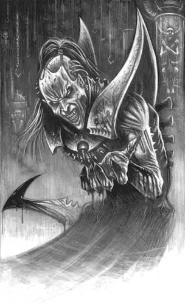

Respect diplomatique : 130
18/04 ETU 21:07
Score : 13 Détails
Cher nouveaux commandants, cher commandantes, futur Ultrèmes, sociopathes, fou, hydropathes, ASTien, PPGien, humains ou accessoire, tous pensants, tous vivants ;| 0 : orthographe insuffisante 0 : présentation bâclée 0 : hors sujet 0 : hors role play 0 : message insultant | efforts visibles : 0 message adapté : 2 message remarquable : 5 humour décapant : 0 role play intéressant : 6 |
Je vous souhaite tout le bohneur de cette galaxie. Bienvenue ! Bienvenue dans notre terrain de jeu un peu perver, car vous en aurez besoin, je ne me fais aucune illusion.
Je vous souhaite de vivre longtemps, de faire des petits ou des grands, d'exister comme vous le souhaitez, d'apprendre le pire de l'homme comme le meilleur. Nous sommes tous frêre, même dans la peur, même dans l'horreur. Alors rejoignez la ronde sans fin du monde ! Elle vous remerciera. Rejoignez nous ! N'ayez pas peur, nous ne mordons que rarement.
Je ne sais pas quel sera votre situation lorsque vous lirez ce message. Des monstres peuvent naître comme des beautés peuvent s'enflammer ; vous pouvez connaitre la dictature, la démocratie, la paix, la guerre, ou encore rien de cela. Vous pouvez connaitre la beauté ou le monstrueux. Mais il y a une chose qui ne changera pas, qui ne changera jamais : des êtres existeront qui voudront la paix, qui aspireront la liberté.
Ecoutez vous ! Ecoutez les donc. Sachez qu'ils possédent nombres de noms selon les temps et les âges, que ce soit sage, fous, humains, pacifiste ; comprenez que la fragile fleur de leur foi n'est qu'a un pas d'être détruite, mais que pourtant elle peut déplacer des montagnes. Comprenez donc que c'est vous qui faites le futur, car c'est là votre plus grande force.
Alors regroupez vous. La liberté n'a pas besoin de jardin, ni de lumière. C'est pour ça que jamais nous ne pourrons la détruire. La liberté n'a besoin que d'une personne pour survivre, même lorsque toute les autres bougies se seront éteintes. La vague fauche les âmes, les horreurs folles vous envellope, hurle a la mort et a la destruction ; et pourtant, la liberté résiste en vous, comme un oeuf qui ne demande qu'a éclore. Peux importe que le moment ne vienne pas de votre vie, peux importe que la lumière et le bohneur jamais ne vous touche. Tout ce qu'elle vous demande c'est d'être prêt le moment venu.
Et vous le serez. N'est ce pas ?
Merci ;
Dauntain Chrysalide, maître de la Banalité.
PS : Ceci était un appel au nouveau. Il vaut ce qu'il vaut, soit pas grand chose. Mais j'espére y faire voir un peu de lumière dans les ères de ténébres et que les plus anciens, égaré, y retrouve peut être quelque chose. Et puis, franchement, cela faisait longtemps que je souhaitais leur faire un petit coucou ! Alors coucou ! N'ayez pas peur ! Viendez !
Respect diplomatique : 16

20/04 ETU 10:39
Score : 1 Détails
Heureusement que la liberté n'a besoin de qu'une personne,parce que sinon,plus personne n'en parlerait.J'ai l'impression que vous êtes bien seul,Dauntain,même si votre discours est louable.| 0 : orthographe insuffisante 0 : présentation bâclée 0 : hors sujet 0 : hors role play 0 : message insultant | efforts visibles : 0 message adapté : 1 message remarquable : 0 humour décapant : 0 role play intéressant : 0 |
Respect diplomatique : 57
20/04 ETU 13:57
Score : 2 Détails
Il n'est pas seul, beaucoup de commandants aiment la liberté, mais cela est peut être trop dur à comprendre pour certains.| 0 : orthographe insuffisante 0 : présentation bâclée 0 : hors sujet 0 : hors role play 0 : message insultant | efforts visibles : 0 message adapté : 1 message remarquable : 1 humour décapant : 0 role play intéressant : 0 |
Soyons réaliste, exigeons l'impossible.
Respectueusement, Arrkaon
Respect diplomatique : 16
20/04 ETU 19:35
Score : 1 Détails
Joli paradoxe.Moi, je ne voulais que puissance.Ce n'est quand même pas la mer à boire!Et bien non,j'ai échoué.Alors imaginez,rechercher la liberté!| 0 : orthographe insuffisante 0 : présentation bâclée 0 : hors sujet 0 : hors role play 0 : message insultant | efforts visibles : 0 message adapté : 1 message remarquable : 0 humour décapant : 0 role play intéressant : 0 |
Respect diplomatique : 130
23/04 ETU 19:36
Score : 2 Détails
Cher Dranach ;| 0 : orthographe insuffisante 0 : présentation bâclée 0 : hors sujet 0 : hors role play 0 : message insultant | efforts visibles : 0 message adapté : 0 message remarquable : 2 humour décapant : 0 role play intéressant : 0 |
Vous ne pouvez pas savoir comment vos messages m'ont fait plaisir. Rien que de vous entendre dire que vous n'avez pas réussi a trouver la force et que vous pensez ne jamais trouver la liberté m'a rendue plus heureux que je ne l'étais depuis longtemps. Et si, je te le demande mon futur amis, la liberté était la puissance ?
Je sais que c'est parfois difficile a considerer. Pour l'esprit qui est esclave, la liberté est une pensée qui lui semble trop belle, trop haute pour ses maigres bras. Il n'arrive pas a comprendre ou accepter. Pour l'être qui recherche la puissance, la liberté ne lui semble qu'un hobie sans suite.
Et pourtant, il existe des hommes qui la recherche. Ce ne sont pas des utopistes, bien qu'ils soit parfois un peu fous. Certain sont naïf comme moi, d'autre cynique, d'autre philosophe ou menteur. Tous recherche un certain monde, ou l'homme n'y cotoirait plus la mort et la destruction. Je pense ainsi.
Plus. Tu semble croire que nous vivons dans un monde ou seul la force est importante. C'est une idée fausse. Nous n'avons jamais vécu dans un tel monde. Il a toujours existé des mouvements qui regroupe. Les hydropathes sont ainsi, et les hydropathes ne recherche la puissance que parcequ'elle permet de garder la liberté. Tu va peut être croire que c'est égocentrique ou mesquin, mais je te vois comme un Homme qui a perdue de vue ce qui fait la vie. Tu l'a toi même reconnu : la voie de la force et de la servitude n'est pas la bonne. Elle n'apporte que malheur, détresse, et destruction. Ma voie m'a apporté folie, amour, humour et amitié. Elle m'a apporté le bohneur et le rire.
Ce n'est pas parce que tu t'es enfermé dans ta propre spirale destructrice que le monde est ainsi.
J'aime a croire que l'univers n'est pas indifferent a la vie. Il lui est activement bénéfique. C'est ce que la bêtise humaine fait après qui change tout.
Libére toi de tes chaine et de tes préjugé, je t'en prie Dranach. Rejoins nous. Et si tu es définitivement parti, que d'autre y cherche ce qu'il souhaite y trouver.
Merci ;
Dautnain Chrysalide.
Respect diplomatique : 6

24/04 ETU 09:04
Score : 0 Détails
Rester libre c'est l'ultrèmisme.| 0 : orthographe insuffisante 0 : présentation bâclée 0 : hors sujet 0 : hors role play 0 : message insultant | efforts visibles : 0 message adapté : 0 message remarquable : 0 humour décapant : 0 role play intéressant : 0 |
L'ultrèmisme c'est vivre!
Oui, je vais retourner à l'ultrèmisme. Je ne supporte point la paix. Que quiconque qui puisse me faire retourner chez les ultrèmes me le dise.
Merci,
Terentius